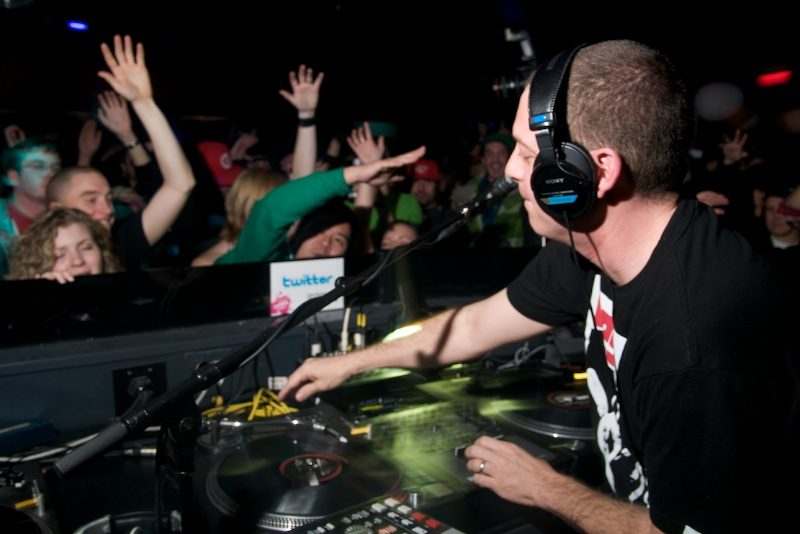

Z-Trip [Audio]: The original mash-up master



Think 2ManyDJs. Think Girl Talk. Think the Bang Gang DJs, even. Well think again, because Z-Trip was doing the whole mash-up thing before any of those guys. Considered by many to be one of the founder of the mash-up movement, where hip hop and club music struts its stuff alongside rock, pop, country, western and whatever else the enterprising DJ decides to throw into the mix, Z-Trip was laying the groundwork from the early days of his career for a DJ to be allowed the right to play The Prodigy alongside John Cougar Mellancamp. And for it to actually work. I’ve personally witnessed it, just in case you were wondering.
“Musically I’m all over the place,” Z-Trip laughed when he talked to ITM. “But oddly enough those two probably fit in some weird way… “I don’t wanna take credit for all that shit, because there’s so many other people that came before me, but to be one of the people that put my stamp on it, and know I was a cog in the machine that helped push the culture forward, that’s great. I don’t shy away from that.”
Z-Trip is the ultimate party DJ, and he’ll be bringing his unmistakable rockin’ vibes to the Big Day Out this year. ITM’s Angus Paterson talks to the original mash-up master about bringing the genres together, what he thinks of the Bang Gang DJs, the small role he played in putting Barack Obama into power last year as well as a certain life-changing gig he played recently at a US army base in Kuwait.
Witness Z-Trip bringing the party at the following shows…
Sat Jan 17 – Step Inn, Brisbane
Sun Jan 18 – Big Day Out, Gold Coast
Tues 20 Jan – Transit Bar, Canberra
Wed 21 Jan – Electric Light Hotel, Adelaide
Thurs 22 Jan – Beck’s Festival Bar, Sydney
Fri Jan 23 – Big Day Out, Sydney
Sat 24 Jan – The Esplanade Hotel, Melbourne
Sun 25 Jan – Republic Bar and Café, Tasmania
Mon Jan 26 – Big Day Out, Melbourne
Fri Jan 30 – Big Day Out, Adelaide
Sun Feb 1 – Big Day Out, Perth
And check out this amazing footage of Z-Trip getting a crowd of 70,000 punters to raise their lighters in the air at the Bonnaroo Festival in Tennessee…